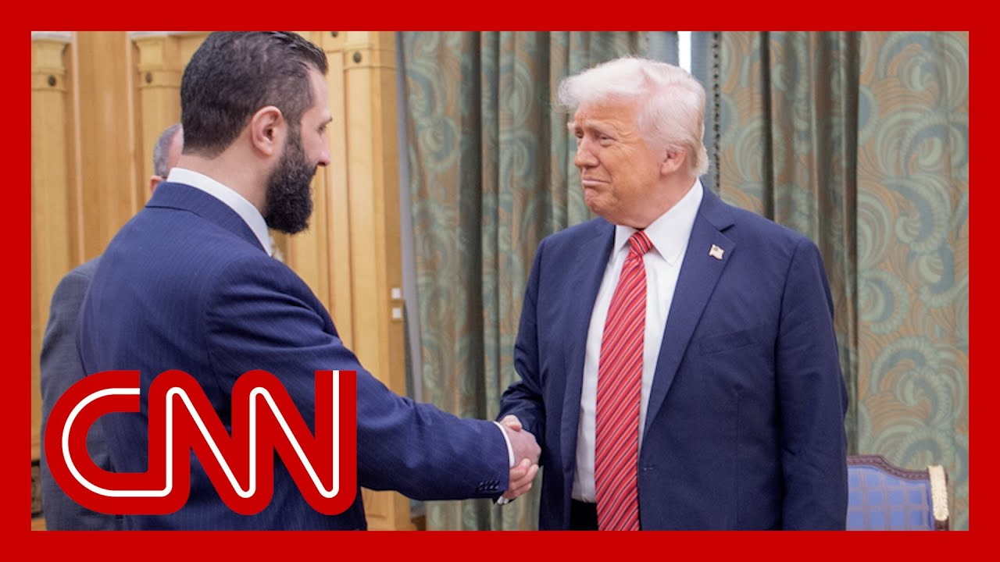

【特朗普会见曾被美国悬赏1000万美元的叙利亚领导人】
Summary: Donald Trump praises the Syrian president as strong and persuasive, announces lifting US sanctions on Syria, and discusses regional stability with Middle East experts.
摘要： 特朗普称赞叙利亚总统强大且有说服力，宣布解除对叙利亚的制裁，并与中东专家讨论地区稳定问题。

⏱️ Estimated Reading Time: 11 min
How did you find the Syrian pres I think very good.
你觉得叙利亚总统怎么样？我认为非常好。
Traction guy, tough guy, strong, fast, very strong persuader.
他是个有影响力的人，强硬、强大、敏捷，非常有说服力。
But he's got it.
但他做到了。
He's got a real shot at pulling it together.
他确实有机会把事情整合起来。
And I spoke with the president recently that the U.S. has got to show before traveling here to Doha.
我最近与总统交谈，美国必须在前往多哈之前展示态度。
Well, before that meeting, President Trump announced plans to lift punishing US sanctions on Syria.
在那次会议之前，特朗普总统宣布计划解除对叙利亚的严厉制裁。
He says Saudi Crown Prince Moham bin Salman, who attended in person, and Turkish President Recep Tayyip Erdogan, who you just heard mentioned and he joined that meeting on th Both played an instrumental role in his deci
他表示，亲自出席的沙特王储穆罕默德·本·萨勒曼和刚刚提到的土耳其总统埃尔多安（他也参加了会议）在他的决定中发挥了关键作用。
We can't underscore how important this trip is.
我们无法强调这次访问有多重要。
President Trump announcing the lifting of all sanctions on Syria following that historic meeting in Riyadh with the interim president.
特朗普总统在利雅得与临时总统举行历史性会晤后，宣布解除对叙利亚的所有制裁。
Joining me now to unpack what this means for Sy and the region is senior fellow at the Middle East Institute, Ib al Aseel.
中东研究所高级研究员伊布·阿西尔现在加入我们，解读这对叙利亚和地区意味着什么。
The interim president once branded a terrorist, now stands alongside President Trump in Riy
这位曾被贴上恐怖分子标签的临时总统，现在与特朗普总统并肩站在利雅得。
This, you could argue, legitimizes a person who wants for US troops
可以说，这使一个希望美军撤离的人合法化。
That's one argument or the other argument, I guess, conversely, is this is a pragmatic step towards stabilizing Syria.
这是一种观点，另一种观点可能是，这是稳定叙利亚的务实一步。
How do you view this?
你如何看待这一点？
It's a huge step for stabilizing and it's something that Syrians have been asking for for a long
这是稳定局势的一大步，也是叙利亚人长期以来的诉求。
And I want to highlight that one
我想强调这一点。
Of course, the Saudi role was a huge and many Syrians appreciated tha
当然，沙特的作用很大，许多叙利亚人对此表示赞赏。
And same for the Turkish role.
土耳其的作用也是如此。
But also many Syrians have been working on that, from the students to academics to activists to business leaders and journalists writing and talking about this and pushing more and more towards lifting sa
但许多叙利亚人也在为此努力，从学生、学者、活动人士到商界领袖和记者，他们都在撰写和谈论此事，并越来越推动解除制裁。
Why?
为什么？
Because it allows Syrians to breathe again.
因为这能让叙利亚人重新呼吸。
Usually when we think about sanc we think of them as on the macro as something huge on a country.
通常，当我们想到制裁时，我们将其视为对一个国家的宏观巨大影响。
But we forget that they affect the lives of the ind on the tiny details from medicin to connectivity and being able to to check their normally and download an update for for an app also to what indu they can have, where they can tr what kind of machines they can buy for their factories
但我们忘记了，它们影响个人的生活，从医药到网络连接的微小细节，以及能否正常检查或下载应用程序更新，还包括他们能拥有什么行业、在哪里交易、能为工厂购买什么样的机器。
All of that Syrians, We are facing immense c
所有这些，叙利亚人，我们正面临巨大的挑战。
and now the road seems to be with less challenge.
现在这条路似乎挑战减少了。
It's still challenging, but one and the major obstacle seems to be moved out from the w
仍然具有挑战性，但一个主要障碍似乎已被移除。
for Syrians to move ahead and rebuild their and improve the dynamics, including the political dynamics inside Syria.
叙利亚人可以继续前进，重建家园，改善局势，包括叙利亚内部的政治动态。
Crown Prince.
王储。
Crown Prince Mohammed bin Salman Arabia reportedly urging Preside Trump to engage without al-Shara
据报道，沙特王储穆罕默德·本·萨勒曼敦促特朗普总统在不涉及沙雷的情况下参与。
Saudi Arabia has gone from oppos Assad's regime to championing Sy reintegration into the Arab fold
沙特从反对阿萨德政权转变为支持叙利亚重新融入阿拉伯世界。
And what does this pivot reveal about Riyadh's evolving strategy in this region
这一转变揭示了利雅得在该地区不断演变的战略是什么？
It's because of the location of and the potential of Syria in th and in the regional aspiration of the Saudis and the economic p that Syria could contribute to t
这是因为叙利亚的地理位置和潜力，以及沙特在该地区的抱负和叙利亚可能贡献的经济潜力。
Syria is a very at very sensitiv on on the map.
叙利亚在地图上是一个非常敏感的地区。
Stabilizing Syria could help stabilizing the Middle East.
稳定叙利亚有助于稳定中东。
And not only that, allowing Syria's to rebuild thei would certainly contribute to the prosperity of the Middle
不仅如此，允许叙利亚重建家园必将促进中东的繁荣。
I think any improvement in the Syrian economy would be felt directly in Lebanon, would be felt directly in Jordan and that would also open the doo for the Syrian refugees to go back to their countries.
我认为叙利亚经济的任何改善都会直接影响到黎巴嫩和约旦，也将为叙利亚难民返回祖国打开大门。
Similar for Turkey.
对土耳其也是如此。
Also, Syria connects Turkey and to Arabia and the rest of the Middle East.
此外，叙利亚连接土耳其、阿拉伯和中东其他地区。
Many major economic projects inside the Mid requires stability in Syria, and all of that would certainly be reflected on the rest of the region and would allow to shift the men and the reality of the region from conflicts, from wars, from violence into more of economic oriented, business oriented development and prosperity mentality in Syria and in the region.
中东许多重大经济项目需要叙利亚的稳定，所有这些必将反映在该地区其他地区，并使该地区的观念和现实从冲突、战争、暴力转向更注重经济、商业的发展和繁荣心态。
How?
如何？
Ibrahim The streets of Damascus celebrating, as are other cities across the country.
易卜拉欣，大马士革的街道上人们在庆祝，全国其他城市也是如此。
After 50 years of economic isolation and more than a decade of war.
经过50年的经济孤立和十多年的战争。
The hope is that the shattered institutions of Syria can be rev
人们希望叙利亚破碎的机构能够重建。
I wonder how you see the idea of Syria normalizing relations with Israel and gifting President Trump an Abraham Accor
我想知道，你如何看待叙利亚与以色列关系正常化并给特朗普总统一份《亚伯拉罕协议》礼物的想法。
Is that a leap of faith at this
这是否是一种信仰的飞跃？
If so, how much of a leap of fai
如果是，这种飞跃有多大？
Certainly a directive from President Trump and ask what kind of change, Becky.
这当然是特朗普总统的指示，并询问会带来什么样的变化，贝基。
The majority of Syrians, they want to have peace at home and they want to have peace in the neighborhood.
大多数叙利亚人希望国内和平，也希望与邻国和平相处。
They do want to have peace with with their neighbors.
他们确实希望与邻国和平相处。
The issue with Israel is indeed complicated, but it's not impossible to to resolve the issue of the Golan H
与以色列的问题确实复杂，但解决戈兰高地问题并非不可能。
The issue of the borders.
边界问题。
The concerns of both sides are deep and real and serious.
双方的关切深刻、真实且严肃。
However, that means there is a potential for these talks and there is a potential for having better relationships on both sides, the Israeli side and the Syrian and that require both sides to s
然而，这意味着这些会谈有潜力，双方（以色列和叙利亚）也有可能建立更好的关系，这需要双方共同努力。
a long journey of negotiations b both of them and to have and to believe that a better relationship is possible between both of them
这是一段漫长的谈判之旅，双方需要相信更好的关系是可能的。
Yesterday, we've seen Syrians celebrating in the streets, hoping really that their childre will have a better life than the ones they had over the last few decades.
昨天，我们看到叙利亚人在街头庆祝，真心希望他们的孩子能过上比过去几十年更好的生活。
And they will be able to have pe
他们将能够拥有和平。
They will be able to have peace in their country and they will be able to focus more about how to rebuild this country rather than going from one confl to another and from one cycle of violence to another.
他们将能够在自己的国家拥有和平，并更多地关注如何重建这个国家，而不是从一个冲突走向另一个冲突，从一个暴力循环走向另一个暴力循环。
What does this say about US foreign policy and how might this affect Washington's relationships with more traditional allies?
这对美国外交政策意味着什么？这可能如何影响华盛顿与传统盟友的关系？
And I am thinking very specifically about Israel.
我特别想到以色列。
It does feel as if we are turnin with Donald Trump in US policy on the Middle East.
确实感觉我们在特朗普的领导下，美国的中东政策正在转变。
I think the nature or the way of striking deals is clearly different between President Trump and the presidents before him.
我认为特朗普总统与前任总统达成协议的方式明显不同。
He's clearly not hesitant to tak big steps and big leaps in relat like meeting with Ahmed Shah, like announcing that he's going to lift all sanctions on o
他显然不犹豫采取重大步骤和飞跃，比如会见艾哈迈德·沙阿，比如宣布将解除所有制裁。
But I also would like to highlig that Syria, before the both regi and the Assad dynasty, was a Western oriented nation when it comes to the political institutions, to the economic policy, to educa and to the foreign alignments.
但我也想强调，叙利亚在阿萨德王朝之前，在政治制度、经济政策、教育和外交结盟方面是一个西方导向的国家。
And I think opening the door for to go back and become more integ in the region and friendlier relationships with the West is a huge opportun
我认为为叙利亚重新融入该地区并与西方建立更友好关系打开大门是一个巨大的机会。
And I'm glad President Trump recognized that and built on tha
我很高兴特朗普总统认识到这一点并在此基础上发展。
I'm still watching the rest of t to see what kind of deals President Trump is going to strike and what kind of understandings he is building in the region.
我仍在观察，看看特朗普总统将达成什么样的协议，以及他在该地区建立什么样的理解。
But there is a huge momentum in the region.
但该地区有巨大的势头。
There is a huge shift and a huge opportunity.
这是一个巨大的转变和巨大的机会。
And the United States no matter who the president is, no matter what party and political party is in the White House or in the Congress, the United States should recognize this opportunit
无论总统是谁，无论白宫或国会由哪个政党掌控，美国都应该认识到这个机会。
because it's builds for a better between the United States and the whole Middle East as a r after a decades of troubling relationship.
因为它为美国和整个中东之间建立更好的关系奠定了基础，经过几十年的紧张关系。